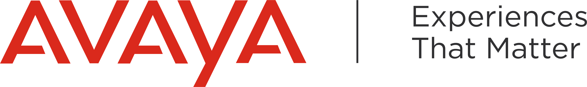

<div *ngIf="isAuthenticated()" class="side-menu sidebar-inverse" [ngClass]="{ 'expand': toggle }" (mouseover)="handleHover()"
    (mouseleave)="handleLeave()">
    <nav class="navbar navbar-default" role="navigation">
        <div class="side-menu-container">
            <div class="navbar-header">
                <a class="navbar-brand" routerLink="/">
                    <div *ngIf="hoverToggle || toggle" class="icon" style="width: auto"></div>
                    <div *ngIf="!(hoverToggle || toggle)" class="icon" style="width: 60px"></div>
                    <!-- <div class="title brand">JHipster </div> -->
                </a>
            </div>
            <ul class="nav navbar-nav">
                <li class="panel panel-default dropdown">
                    <a (click)="expandAndFold('ivrManageDropdown')">
                        <span>
                            <fa-icon icon="home"></fa-icon>
                            <span class="dropdown-toggle" [ngStyle]="{'display': !(hoverToggle || toggle)? 'none':'' }" 
                            jhiTranslate="global.menu.sidebar.numbermanagement">Number Management</span>
                        </span>
                    </a>
                    <!-- Dropdown level 1 -->
                    <div id="ivrManageDropdown" class="collapse dropdown-menu show" [ngStyle]="{'display': !(hoverToggle || toggle)? 'none':'' }">
                        <div class="panel-body">
                            <ul class="nav navbar-nav">
                                <li>
                                    <a>
                                        <fa-icon icon="random"></fa-icon>
                                        <span>Ivr Node</span>
                                    </a>
                                </li>
                                <li>
                                    <a class="dropdown-item" routerLink="black-list" routerLinkActive="active"
                                        [routerLinkActiveOptions]="{ exact: true }" >
                                        <fa-icon icon="phone" fixedWidth="true"></fa-icon>
                                        <span jhiTranslate="global.menu.entities.blackList">Black List</span>
                                    </a>
                                </li>
                            </ul>
                        </div>
                    </div>
                </li>
                <!-- <li>
                    <a routerLinkActive="active" [routerLinkActiveOptions]="{ exact: true }">
                        <span>
                            <fa-icon icon="table"></fa-icon>
                            <span [ngStyle]="{'display': !(hoverToggle || toggle)? 'none':'' }">IVR Report</span>
                        </span>
                    </a>
                </li> -->

                <li *bloomHasAnyAuthority="'ROLE_ADMIN'" class="panel panel-default dropdown">
                    <a (click)="expandAndFold('userManageDropdown')">
                        <span>
                            <fa-icon icon="user-cog"></fa-icon>
                            <span class="dropdown-toggle" [ngStyle]="{'display': !(hoverToggle || toggle)? 'none':'' }"
                                jhiTranslate="global.menu.admin.userManagement">User management</span>
                        </span>
                    </a>
                    <!-- Dropdown level 1 -->
                    <div id="userManageDropdown" class="collapse dropdown-menu show" [ngStyle]="{'display': !(hoverToggle || toggle)? 'none':'' }">
                        <div class="panel-body">
                            <ul class="nav navbar-nav">
                                <li>
                                    <a routerLink="admin/user-management" routerLinkActive="active">
                                        <fa-icon icon="user" fixedWidth="true"></fa-icon>
                                        <span jhiTranslate="global.menu.admin.userManagement">User management</span>
                                    </a>
                                </li>
                                <li>
                                    <a routerLink="admin/bloom-metrics" routerLinkActive="active">
                                        <fa-icon icon="tachometer-alt" fixedWidth="true"></fa-icon>
                                        <span jhiTranslate="global.menu.admin.metrics">Metrics</span>
                                    </a>
                                </li>
                                <li>
                                    <a routerLink="admin/bloom-health" routerLinkActive="active">
                                        <fa-icon icon="heart" fixedWidth="true"></fa-icon>
                                        <span jhiTranslate="global.menu.admin.health">Health</span>
                                    </a>
                                </li>
                                <li>
                                    <a routerLink="admin/bloom-configuration" routerLinkActive="active">
                                        <fa-icon icon="list" fixedWidth="true"></fa-icon>
                                        <span jhiTranslate="global.menu.admin.configuration">Configuration</span>
                                    </a>
                                </li>
                                <li>
                                    <a routerLink="admin/audits" routerLinkActive="active">
                                        <fa-icon icon="bell" fixedWidth="true"></fa-icon>
                                        <span jhiTranslate="global.menu.admin.audits">Audits</span>
                                    </a>
                                </li>
                                <li>
                                    <a routerLink="admin/logs" routerLinkActive="active">
                                        <fa-icon icon="tasks" fixedWidth="true"></fa-icon>
                                        <span jhiTranslate="global.menu.admin.logs">Logs</span>
                                    </a>
                                </li>
                            </ul>
                        </div>
                    </div>
                </li>
            </ul>
        </div>
        <!-- /.navbar-collapse -->
    </nav>
</div>
